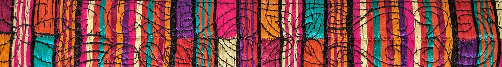
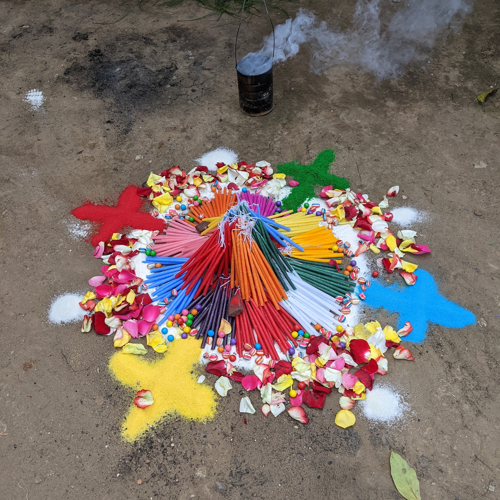
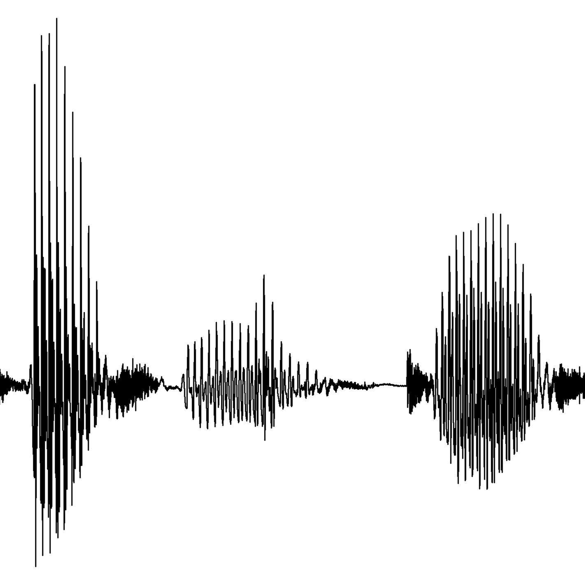
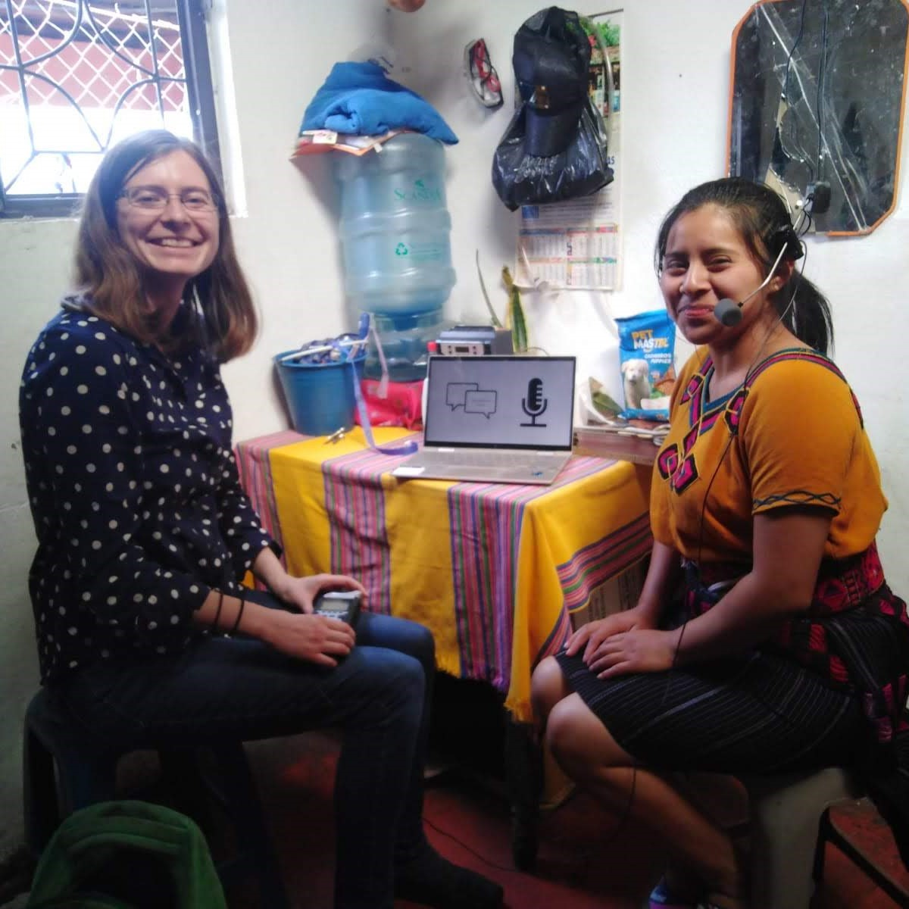
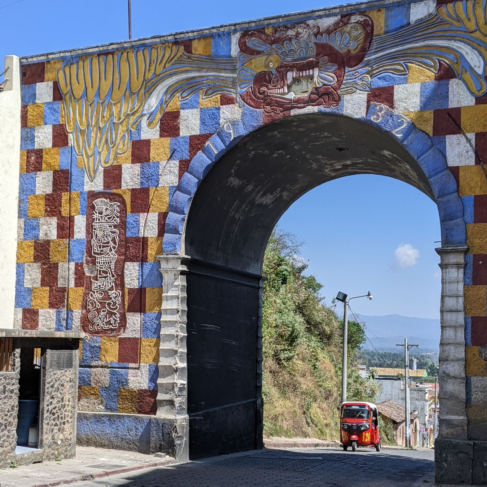
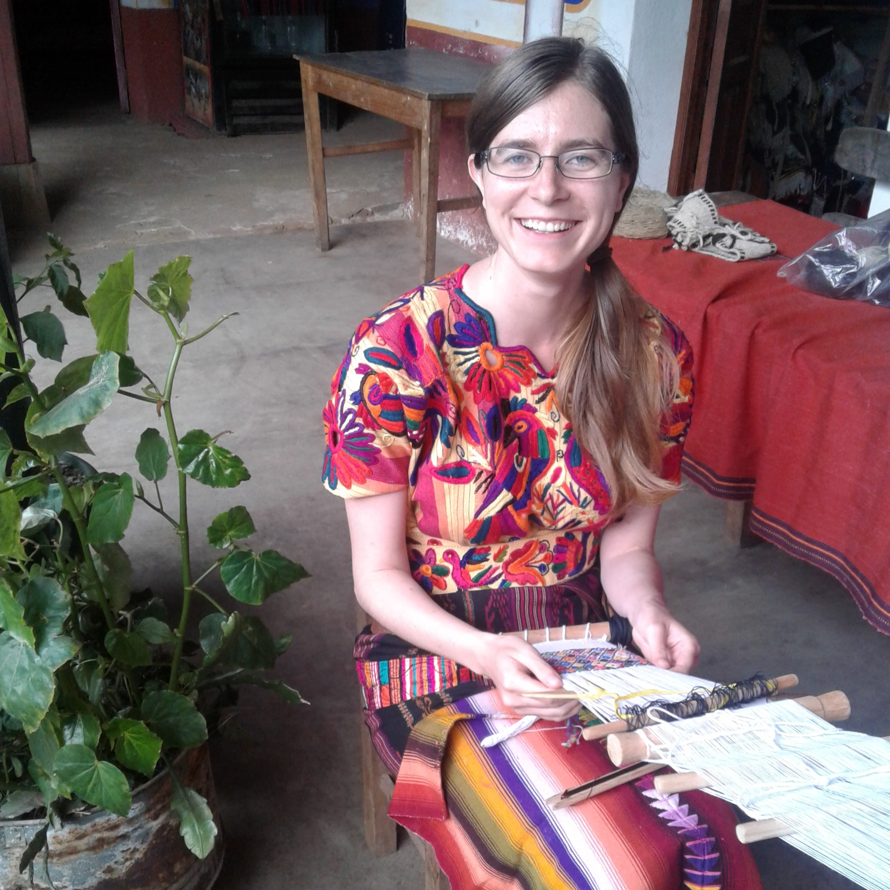

Menu
Menú
Inicio
Investigación
Proyecto de documentación lingüística del k'iche' de Chichicastenango
Fonética, fonología y prosodia
Trabajo de campo en Guatemala
Materiales
Interpretación
Aficiones e intereses
English
Elizabeth Wood, PhD
Lingüista e intérprete
CV

Proyecto de Documentación Lingüística del K'iche' de Chichicastenango

Investigación en fonética, fonología, y prosodia

Trabajo de campo en Guatemala

Diapositivas, artículos, y otros materiales
Interpretación

Aficiones e intereses